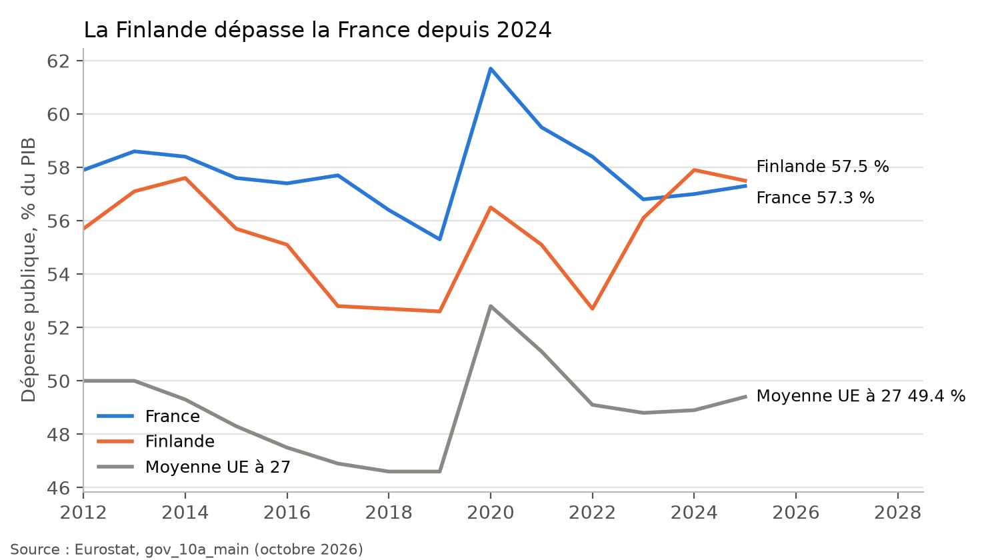
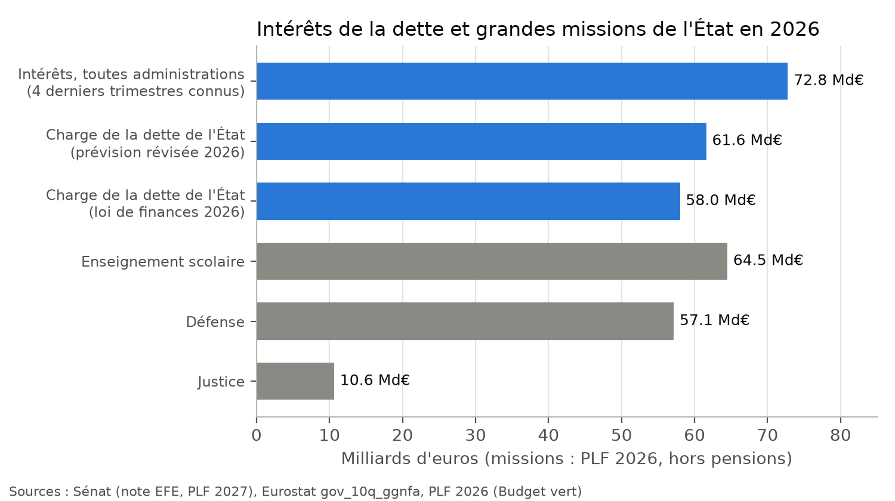

← Tous les thèmes · 1 sur 16
Dette, dépense publique et fiscalité
Le diagnostic tient sur l'essentiel, mais il pousse presque toujours le chiffre ou le classement d'un cran.
- ✓Exact 6
- ≈Proche 6
- !À nuancer 6
- ✕Inexact 1
- ◆Opinion ou promesse 3
19 affirmations et 3 mesures · 41 sources
1Ce qu'il dit
Ses mots, avant toute vérification. Les étiquettes numérotées renvoient à l'affirmation vérifiée plus bas, sous le même numéro.
Diagnostic
Pour lui, la France est surendettée parce qu'elle dépense trop, et non parce qu'elle manque de recettes : « le roi est nu, parce que le roi est sur-endetté, le roi est sur-fiscalisé » (franceinfo, 7 mai 2026). Il le dit sous trois formes, répétées depuis 2021 :
Le record de la dépense publique
« champion du monde des dépenses publiques avec 58 % du PIB » (2024), puis « 57 % de la richesse produite » (2026).
Le record des prélèvements
« record du monde des prélèvements obligatoires », « 47 € de prélèvements sur 100 € de valeur produite (record UE) ». Augmenter les impôts aggraverait donc la situation : « pour un euro d'augmentation de l'impôt, vous avez deux euros de récession » (Grand Angle, mars 2025).
Une dette qui coûte de plus en plus cher
3 482 Md€ et 117,4 % du PIB en avril 2026, une dette qui a crû plus vite que la richesse depuis 2017, une charge d'intérêts « 7 fois » supérieure au budget de la Justice et devenue « premier poste de dépense de l'État », une dette détenue à 55 % par des non-résidents, donc une perte de souveraineté.
✓5Exact✓6Exact≈3Périmètres mélangés!4Périmètres mélangés≈8Arrondi
Il ajoute que les collectivités locales ne sont pas responsables : elles ne portent que 8 à 9 % de la dette (ce point est traité dans le thème Décentralisation).
Cibles qu'il désigne
Les dépenses sociales
Le « gros volant » : « 900 milliards » puis « 950 milliards », « le record absolu du monde par rapport à la population », qui seraient des « trappes à pauvreté ».
Les aides aux entreprises
144 à 157 Md€, qu'il veut supprimer en baissant d'autant les impôts des entreprises.
La fiscalité des entreprises et du capital
Jugée confiscatoire : 13,2 % du PIB de prélèvements sur les entreprises contre 7,3 % dans la zone euro, des impôts de production deux à trois fois plus lourds qu'ailleurs, plus de 60 % de taxation cumulée du capital.
Le poids sur le travail et la consommation
47 % du coût d'un salarié prélevé, 60 % du prix du carburant.
Mesures proposées
| Mesure | Ce qu'il en dit | Vérifié plus bas |
|---|---|---|
| Baisser la dépense publique de 200 Md€ par an en fin de quinquennat, 300 Md€ visés | 80 Md€ la première année, « revue générale de toutes les dépenses », suppression d'agences et de doublons, non-remplacement d'une partie des départs ; dépense ramenée « autour de 50 % » du PIB | ◆20Promesse |
| Rendre l'essentiel des économies | sur 200 Md€ : 120 Md€ de cotisations en moins, rendus en salaire net (« presque 400 euros » par mois), 40 Md€ de baisse des impôts de production en commençant par la C3S, 40 Md€ pour la dette | ◆21Promesse |
| Ramener les prélèvements obligatoires à la moyenne de la zone euro | « baisse nette de 100 milliards », jamais de hausse d'impôt | ◆22Promesse |
| Baisser l'impôt sur les sociétés à 20 % | avec une part locale de 0 à 5 points ; supprimer C3S et CVAE ; plafonner la taxation du capital à 22 % | ≈19Contexte manquant, ◆22Promesse |
| Supprimer les aides aux entreprises | en contrepartie d'une baisse équivalente des impôts | ≈11Contexte manquant |
| Règle d'or sur le fonctionnement | les collectivités ne peuvent emprunter que pour investir : il veut appliquer la même logique à l'État | — |
2Ce que disent les chiffres
Une carte par affirmation : l'étiquette dit en quoi la phrase s'écarte des chiffres, la ligne en dessous dit pourquoi. Ouvrir une carte pour lire la citation exacte, l'explication, le calcul et les sources.
1≈Superlatif« Champion du monde des dépenses publiques avec 58 % du PIB » (30/08/2024)Première de l'UE et de l'OCDE en 2022 et 2023, mais pas « du monde », et dépassée par la Finlande depuis 2024.
« Le social étatisme […] fait de notre pays le champion du monde des dépenses publiques avec 58% du PIB »
David Lisnard, discours, 80e anniversaire de la Libération de Cannes, 30 août 2024 · voir la source
≈Superlatif
« Record », « premier », « dernier » : la France est bien ou mal placée, mais pas à la place annoncée.
Proche Confiance : forte
- Ce qu'il annonce
- Données publiques
- Point de comparaison
Pourquoi
- En 2022 (58,4 %) et en 2023 (56,8 %), la France avait la dépense publique la plus élevée de l'UE et de l'OCDE. Le « 58 % » correspond à 2022.
- « Du monde » est excessif. Selon le FMI, une dizaine de pays dépensent plus en % du PIB. Ce sont des micro-États financés par des aides (Nauru, Tuvalu, Kiribati), des pays en guerre (Ukraine) ou des États pétroliers (Libye). La France est 11e à 12e sur 210 pays. Elle est bien première parmi les pays développés jusqu'en 2023.
- Depuis 2024, la Finlande dépasse la France : 57,9 % contre 57,0 % en 2024, 57,5 % contre 57,3 % en 2025. Les reprises de 2026 (« record du monde de la dépense publique, 57 % ») sont donc devenues inexactes, de peu.

Ses autres formulations (4)
- « record de dépense publique de 58 % du PIB en 2022 » (tribune, 22/06/2023)
- « près de 60 % du PIB » (19/07/2024)
- « 57 % de la richesse produite » (20/01/2026, 03/07/2026)
- « 57 % en France » contre 45 % aux Pays-Bas (15/10/2026)
Le calcul
Rang de la France pour la dépense publique
- Entrées :
EUROSTAT-GOV10A-MAIN(na_itemTE, unitPC_GDP, secteur S13) ;FMI-FM-DEPENSES(Fiscal Monitor, dépenses des administrations publiques, % du PIB, 210 pays). - Calcul : on classe les pays par dépense publique en % du PIB pour chaque année et on lit le rang de la France. Trois périmètres : UE à 27 (Eurostat), monde (FMI, tous pays), OCDE (FMI restreint aux 38 membres).
- Choix : l'indicateur est celui que cite Lisnard (dépense publique totale rapportée au PIB). Le FMI est la seule source qui couvre le monde entier avec une méthode commune.
Résultats du calcul
Ce qu'il dit : 58 % (2024) ; 57 % (2026) · « champion du monde »
| Mesure | Cas | Valeur | Remarque |
|---|---|---|---|
| Dépense publique, % du PIB (France) | UE à 27, 2022 | 58,4 % du PIB | rang de la France : 1/27 ; 1er : FR (58.4 %) |
| Dépense publique, % du PIB (France) | UE à 27, 2023 | 56,8 % du PIB | rang de la France : 1/27 ; 1er : FR (56.8 %) |
| Dépense publique, % du PIB (France) | UE à 27, 2024 | 57,0 % du PIB | rang de la France : 2/27 ; 1er : FI (57.9 %) |
| Dépense publique, % du PIB (France) | UE à 27, 2025 | 57,3 % du PIB | rang de la France : 2/27 ; 1er : FI (57.5 %) |
| Rang mondial de la France, dépense publique % du PIB | monde (FMI), 2023 | 11 rang | 210 pays ; devant la France : TUV, NRU, KIR, LBY, MSR, TLS, UKR, MHL, DMA, FSM |
| Rang de la France parmi les 38 pays de l'OCDE | OCDE (FMI), 2023 | 1 rang | 1er : FRA (56.8 %) |
| Rang mondial de la France, dépense publique % du PIB | monde (FMI), 2024 | 12 rang | 210 pays ; devant la France : NRU, TUV, LBY, TLS, KIR, MSR, UKR, MHL, DMA, FSM, FIN |
| Rang de la France parmi les 38 pays de l'OCDE | OCDE (FMI), 2024 | 2 rang | 1er : FIN (57.8 %) |
| Rang mondial de la France, dépense publique % du PIB | monde (FMI), 2025 | 12 rang | 210 pays ; devant la France : NRU, LBY, MSR, TLS, KIR, TUV, MHL, UKR, FSM, DMA, FIN |
| Rang de la France parmi les 38 pays de l'OCDE | OCDE (FMI), 2025 | 2 rang | 1er : FIN (57.5 %) |
Les sources (2)
- AEurostat · Recettes, dépenses et principaux agrégats des administrations publiques (gov_10a_main) · relevé le 14/11/2026 ·
EUROSTAT-GOV10A-MAIN - AFMI · Fiscal Monitor (octobre 2026) : dépenses des administrations publiques, % du PIB · relevé le 14/11/2026 ·
FMI-FM-DEPENSES
2✓Exact« Le taux de prélèvements obligatoires 2022 le plus élevé de l'OCDE, à 45,4 % du PIB » (15/09/2023)Première de l'OCDE en 2022 (45,9 % selon l'OCDE, 45,4 % selon l'Insee). Depuis, le Danemark est repassé devant : ses reprises de 2026 ne sont plus exactes.
« le taux de prélèvements obligatoires 2022 le plus élevé de l'OCDE, à 45,4 % du PIB, soit 1 197 milliards d'euros d'impôts et de charges »
David Lisnard, tribune, L'Opinion, 15 septembre 2023
✓Exact
Confirmé par les données publiques.
Exact Confiance : forte
Pourquoi
- Avec la définition de l'OCDE, la France était 1re sur 38 en 2022 (45,9 %). 45,4 % est le taux de l'Insee, qui utilise une autre définition.
- Ses reprises sont moins exactes. Sur les données OCDE, la France est 2e derrière le Danemark en 2021, 2023 et 2024 : « ratio le plus élevé de l'OCDE » (avril 2026) est donc faux pour la dernière année connue. Dans l'UE (Eurostat), elle est 1re en 2022, 2023 et 2025, 2e en 2024 derrière la Belgique : « record UE » est exact aujourd'hui. « Record du monde » n'est démontrable ni dans un sens ni dans l'autre. Le FMI ne publie que les recettes publiques totales, sur lesquelles la France est 15e mondiale.
Ses autres formulations (4)
- « record du monde des prélèvements obligatoires » (répété depuis 2021)
- « 100 € de valeur produite = 47 € de prélèvements obligatoires (record UE) » (10/04/2026)
- « 1 350 milliards seront prélevés, soit environ 44 % de son PIB, ratio le plus élevé de l'OCDE » (16/04/2026)
- « 45 % de prélèvements obligatoires » (28/08/2026)
Le calcul
Rang de la France pour les prélèvements obligatoires
- Entrées :
EUROSTAT-TAXAG(na_itemD2_D5_D91_D61_M_D995: impôts et cotisations sociales, y compris cotisations imputées, % du PIB) ;OCDE-RECETTES-FISCALES(catégorie_T: recettes fiscales totales, secteur S13, % du PIB) ;FMI-FM-RECETTES(recettes publiques totales). - Calcul : classement par année, comme en M1.
- Choix : trois définitions coexistent. Celle de l'Insee (45,4 % en 2022, citée par Lisnard), celle d'Eurostat (qui inclut les cotisations imputées et donne un taux plus élevé), celle de l'OCDE (qui sert aux comparaisons internationales). Le FMI ne donne que les recettes publiques totales, qui comprennent des recettes non fiscales : ce n'est qu'un contrôle.
Résultats du calcul
Ce qu'il dit : 45,4 % (2022) ; 47 € pour 100 € (2026) · « le plus élevé de l'OCDE » · « record du monde »
| Mesure | Cas | Valeur | Remarque |
|---|---|---|---|
| Impôts et cotisations sociales, % du PIB (France) | Eurostat UE à 27, 2022 | 47,7 % du PIB | rang 1/27 ; 1er : FR (47.7) ; zone euro 41.3 |
| Impôts et cotisations sociales, % du PIB (France) | Eurostat UE à 27, 2023 | 45,5 % du PIB | rang 1/27 ; 1er : FR (45.5) ; zone euro 40.4 |
| Impôts et cotisations sociales, % du PIB (France) | Eurostat UE à 27, 2024 | 45,1 % du PIB | rang 2/27 ; 1er : BE (45.2) ; zone euro 40.7 |
| Impôts et cotisations sociales, % du PIB (France) | Eurostat UE à 27, 2025 | 46,0 % du PIB | rang 1/27 ; 1er : FR (46.0) ; zone euro 41.3 |
| Recettes fiscales, % du PIB (France, définition OCDE) | OCDE, 2021 | 45,06 % du PIB | rang 2/38 ; 1er : DNK (47.5) |
| Recettes fiscales, % du PIB (France, définition OCDE) | OCDE, 2022 | 45,86 % du PIB | rang 1/38 ; 1er : FRA (45.9) |
| Recettes fiscales, % du PIB (France, définition OCDE) | OCDE, 2023 | 43,85 % du PIB | rang 2/38 ; 1er : DNK (44.0) |
| Recettes fiscales, % du PIB (France, définition OCDE) | OCDE, 2024 | 43,46 % du PIB | rang 2/37 ; 1er : DNK (45.2) |
| Rang mondial de la France, recettes publiques % du PIB | monde (FMI), 2025 | 15 rang | recettes publiques totales (impôts, cotisations et autres recettes), pas seulement les prélèvements |
Les sources (3)
- AEurostat · Principaux agrégats fiscaux (gov_10a_taxag) · relevé le 14/11/2026 ·
EUROSTAT-TAXAG - AFMI · Fiscal Monitor (octobre 2026) : recettes des administrations publiques, % du PIB · relevé le 14/11/2026 ·
FMI-FM-RECETTES - AOCDE · Statistiques des recettes publiques, pays de l'OCDE (Revenue Statistics) · relevé le 14/11/2026 ·
OCDE-RECETTES-FISCALES
3≈Périmètres mélangés« On va payer 7 fois plus d'intérêts de la dette de l'État cette année que tout budget de la justice » (07/05/2026)Pour la dette de l'État, le rapport est de 5,5 à 5,8. « 7 fois » n'est atteint qu'en comptant les intérêts de toutes les administrations.
« Avec nos impôts, on va payer 7 fois plus d'intérêts de la dette de l'État cette année que tout budget de la justice »
David Lisnard, entretien, franceinfo, 7 mai 2026 · voir la source
≈Périmètres mélangés
Le chiffre existe, mais il ne mesure pas ce que dit la phrase, ou il est comparé à un chiffre qui ne couvre pas la même chose.
Proche Confiance : forte
- Ce qu'il annonce
- Données publiques
Pourquoi
- Pour la dette de l'État, comme il le dit, le rapport est de 5,5 (58,0 Md€ votés pour 2026) à 5,8 (61,6 Md€ en prévision révisée), face à 10,6 Md€ pour la Justice hors pensions. Avec les pensions, le rapport descend sous 5.
- Le « 7 fois » n'est atteint qu'avec les intérêts de toutes les administrations publiques (État, Sécurité sociale, collectivités) : 72,8 Md€ sur les quatre derniers trimestres connus, soit 6,9 fois.
- Sa version de juillet 2024, « 5 fois », était exacte : 51,4 Md€ contre 9,8 Md€ (5,2).
- Le fond de l'argument tient sur tous les périmètres : les intérêts représentent 5 à 7 fois le budget de la Justice.

Ses autres formulations (2)
- « la charge de la dette représente 55 milliards cette année, soit 5 fois le budget de la justice, et atteindra 84 milliards en 2027 » (19/07/2024)
- « plus que pour l'Éducation nationale, plus que pour l'armée, 7 fois plus que pour la Justice » (X, 19/08/2026)
Le calcul
Rapport entre les intérêts de la dette et le budget de la Justice
rapport = (charge d'interets) / (credits de paiement de la mission Justice)
- Numérateur, trois variantes :
- charge de la dette de l'État en comptabilité budgétaire (programme 117) : 58,0 Md€ en loi de finances 2026, 61,6 Md€ en prévision révisée 2026 (
SENAT-EFE-PLF2027) ; 51,4 Md€ au PLF 2024 (PLF2024-DESTINATION) ; - intérêts payés par toutes les administrations publiques (État, Sécurité sociale, collectivités), en comptabilité nationale : année 2024 (
EUROSTAT-GOV10A-MAIN,D41PAY) et somme des quatre derniers trimestres publiés, du 3e trimestre 2025 au 2e trimestre 2026 (EUROSTAT-INTERETS-TRIM), faute d'année 2026 complète.
- charge de la dette de l'État en comptabilité budgétaire (programme 117) : 58,0 Md€ en loi de finances 2026, 61,6 Md€ en prévision révisée 2026 (
- Dénominateur : crédits de paiement de la mission Justice hors pensions, tels que publiés dans
BUDGET-VERT-PLF2026(exécution 2024 : 9,83 Md€ ; PLF 2026 : 10,63 Md€). Avec les cotisations de pension (PLF 2025 : 12,46 Md€ au lieu de 10,46 Md€,PLF2025-DESTINATION), le rapport baisse d'environ 15 %. - Limite : les crédits Justice de la loi de finances 2026 votée n'ont pas été téléchargés ; on utilise ceux du PLF 2026, qui en diffèrent peu (ordre de grandeur de 0,1 à 0,3 Md€).
Résultats du calcul
Ce qu'il dit : 7 fois · 5 fois (juillet 2024)
| Mesure | Cas | Valeur | Remarque |
|---|---|---|---|
| Charge d'intérêts / crédits de la mission Justice (PLF 2026, hors pensions) | État, LFI 2026 (comptabilité budgétaire) | 5,46 fois | intérêts 58.0 Md€ ; Justice 10.63 Md€ |
| Charge d'intérêts / crédits de la mission Justice (PLF 2026, hors pensions) | État, prévision révisée 2026 | 5,8 fois | intérêts 61.6 Md€ ; Justice 10.63 Md€ |
| Charge d'intérêts / crédits de la mission Justice (PLF 2026, hors pensions) | toutes administrations, 4 derniers trimestres connus (T3 2025-T2 2026) | 6,85 fois | intérêts 72.8 Md€ ; Justice 10.63 Md€ |
| Intérêts payés (comptabilité nationale) / Justice exécutée 2024 | 2024, toutes administrations | 6,12 fois | intérêts 60.1 Md€ ; Justice exécutée 9.83 Md€ |
| Charge de la dette de l'État / Justice exécutée 2024 (hors pensions) | 2024, État (PLF 2024) | 5,23 fois | charge 51.4 Md€ ; Justice 9.83 Md€ |
Les sources (7)
- AEurostat · Recettes, dépenses et principaux agrégats des administrations publiques (gov_10a_main) · relevé le 14/11/2026 ·
EUROSTAT-GOV10A-MAIN - AEurostat · Intérêts payés par les administrations publiques, trimestriel (gov_10q_ggnfa, D41PAY) · relevé le 14/11/2026 ·
EUROSTAT-INTERETS-TRIM - AMinistère de l'Économie (annexe au PLF 2026, publiée par l'Assemblée nationale) · PLF 2026 — Projet annuel de performances, mission Engagements financiers de l'État (charge de la dette) · relevé le 14/11/2026 ·
PAP2026-ENGAGEMENTS-FIN - AMinistère de l'Économie (direction du Budget) · PLF 2026 — Budget vert : crédits de paiement par programme (exécution 2024, LFI 2025, PLF 2026) · relevé le 14/11/2026 ·
BUDGET-VERT-PLF2026 - AMinistère de l'Économie (direction du Budget) · PLF 2024 — Dépenses 2024 selon les nomenclatures de destination et de nature · relevé le 14/11/2026 ·
PLF2024-DESTINATION - AMinistère de l'Économie (direction du Budget) · PLF 2025 — Dépenses 2025 selon la destination (missions, programmes, actions) · relevé le 14/11/2026 ·
PLF2025-DESTINATION - BSénat (commission des finances) · Note de présentation, mission Engagements financiers de l'État, PLF 2027 (charge de la dette LFI 2026, révisé 2026, PLF 2027) · relevé le 14/11/2026 ·
SENAT-EFE-PLF2027
4!Périmètres mélangés« La charge de la dette atteint 66 milliards d'euros, et devient le premier poste de dépense de l'État, devant l'Éducation nationale et la Défense » (06/11/2025)66 Md€ est la charge de toutes les administrations. Celle de l'État (54,2 Md€ en 2025) restait derrière l'Enseignement scolaire ; la phrase ne devient vraie qu'avec le budget 2027.
« la charge de la dette atteint 66 milliards d'euros, et devient le premier poste de dépense de l'Etat, devant l'Education nationale et la Défense »
David Lisnard, article, site NE, 6 novembre 2025 · voir la source
!Périmètres mélangés
Le chiffre existe, mais il ne mesure pas ce que dit la phrase, ou il est comparé à un chiffre qui ne couvre pas la même chose.
À nuancer Confiance : forte
- Ce qu'il annonce
- Données publiques
- Point de comparaison
Pourquoi
- En 2025, la charge de la dette de l'État était de 54,2 Md€ votés (51,4 Md€ révisés), derrière l'Enseignement scolaire (64,3 Md€). Le chiffre de 66 Md€ est celui de toutes les administrations (65,7 Md€ en 2025). On le compare ici à des budgets de l'État seul.
- La phrase devient vraie plus tard. Dans le projet de budget pour 2027, la charge de la dette de l'État (71,9 Md€) dépasse l'Enseignement scolaire (65,5 Md€) et la Défense (63,4 Md€) : c'est le premier poste hors pensions. Dès 2026, elle dépasse la Défense hors pensions (61,6 contre 57,1 Md€). Sa phrase d'août 2026 (« supérieure au budget des armées ») est donc exacte.
- Pour 2026, il a cité 70, 74 puis 77 Md€ « d'intérêts de la dette de l'État ». L'État paiera environ 62 Md€. Les chiffres de 74 Md€ et plus correspondent à toutes les administrations.
Ses autres formulations (4)
- « La charge de la dette atteindra 74 milliards d'euros en 2026 » (29/01/2026)
- « 70 milliards d'euros d'intérêts » (11/06/2026)
- « 77 milliards d'intérêt de la dette de l'Etat en 2026 » (03/07/2026)
- « charge d'intérêts désormais supérieure au budget des armées » (25/08/2026)
Le calcul
La charge de la dette, premier poste de l'État ?
- Entrées :
PAP2026-ENGAGEMENTS-FIN(LFI 2025 : 54,207 Md€ ; PLF 2026 : 58,615 Md€) ;SENAT-EFE-PLF2027(LFI 2026 : 58,0 Md€ ; révisé 2026 : 61,6 Md€ ; PLF 2027 : 71,9 Md€ ; Enseignement scolaire PLF 2027 : 65,5 Md€ ; Défense PLF 2027 : 63,4 Md€) ;BUDGET-VERT-PLF2026pour les missions Enseignement scolaire et Défense en 2025 et 2026 (hors pensions) ;EUROSTAT-GOV10A-MAINetEUROSTAT-INTERETS-TRIMpour les intérêts de toutes les administrations. - Calcul : comparaison directe des montants, même périmètre (crédits de paiement hors pensions, convention reprise par le Sénat).
Résultats du calcul
Ce qu'il dit : 66 Md€, premier poste · 66 Md€ · 74 / 70 / 77 Md€ en 2026 ; « supérieure au budget des armées » · premier poste · 74 / 77 Md€ en 2026
| Mesure | Cas | Valeur | Remarque |
|---|---|---|---|
| Charge de la dette de l'État (programme 117) | 2025, État (LFI) | 54,21 Md€ | Enseignement scolaire 64.3 Md€ ; Défense 50.5 Md€ (hors pensions) |
| Intérêts payés par toutes les administrations | 2025, toutes administrations | 65,72 Md€ | c'est ce périmètre qui donne 66 Md€ : il inclut Sécurité sociale et collectivités |
| Charge de la dette de l'État | 2026, État (révisé) | 61,6 Md€ | Enseignement scolaire 64.5 Md€ ; Défense 57.1 Md€ (PLF 2026, hors pensions) |
| Charge de la dette de l'État | 2027, État (PLF 2027) | 71,9 Md€ | Enseignement scolaire 65.5 Md€ ; Défense 63.4 Md€ : premier poste en 2027 |
| Intérêts payés (T3 2025-T2 2026) | toutes administrations, 4 derniers trimestres | 72,78 Md€ |
Les sources (6)
- AEurostat · Recettes, dépenses et principaux agrégats des administrations publiques (gov_10a_main) · relevé le 14/11/2026 ·
EUROSTAT-GOV10A-MAIN - AEurostat · Intérêts payés par les administrations publiques, trimestriel (gov_10q_ggnfa, D41PAY) · relevé le 14/11/2026 ·
EUROSTAT-INTERETS-TRIM - AMinistère de l'Économie (annexe au PLF 2026, publiée par l'Assemblée nationale) · PLF 2026 — Projet annuel de performances, mission Engagements financiers de l'État (charge de la dette) · relevé le 14/11/2026 ·
PAP2026-ENGAGEMENTS-FIN - AMinistère de l'Économie (direction du Budget) · PLF 2026 — Budget vert : crédits de paiement par programme (exécution 2024, LFI 2025, PLF 2026) · relevé le 14/11/2026 ·
BUDGET-VERT-PLF2026 - AMinistère de l'Économie (direction du Budget) · PLF 2025 — Dépenses 2025 selon la destination (missions, programmes, actions) · relevé le 14/11/2026 ·
PLF2025-DESTINATION - BSénat (commission des finances) · Note de présentation, mission Engagements financiers de l'État, PLF 2027 (charge de la dette LFI 2026, révisé 2026, PLF 2027) · relevé le 14/11/2026 ·
SENAT-EFE-PLF2027
5✓Exact« La dette publique atteint 3 482 milliards d'euros, soit 117,4 % du PIB » (17/04/2026)Eurostat publie aujourd'hui 3 484 Md€ et 117,3 % du PIB pour le même trimestre : la différence vient d'une simple révision.
« La dette publique atteint 3 482 milliards d'euros, soit 117,4 % du PIB »
David Lisnard, article, site NE, 17 avril 2026 · voir la source
✓Exact
Confirmé par les données publiques.
Exact Confiance : forte
- Ce qu'il annonce
- Données publiques
Pourquoi
- Au 3e trimestre 2025, dernier chiffre connu en avril 2026, Eurostat publie aujourd'hui 3 484 Md€ et 117,3 %. La petite différence vient d'une révision. Au 1er trimestre 2026 : 3 536 Md€, exactement le chiffre qu'il cite en juillet 2026. Au 2e trimestre 2026 : 3 596 Md€ (119,1 %), ce qui rend plausible sa prévision de « 120 % fin 2026 ».
Ses autres formulations (3)
- « 3 345 milliards d'euros de dette, un déficit public de 170 milliards en 2024 » (06/11/2025)
- « elle vient de franchir 3 536 milliards d'euros » (03/07/2026)
- « une dette qui sera de 120 % du PIB fin 2026 » (X, 03/2026)
Le calcul
Niveau de la dette
- Entrée :
EUROSTAT-DETTE-TRIM(dette brute au sens de Maastricht, France, trimestriel, millions d'euros et % du PIB). - Calcul : lecture du trimestre correspondant à la date de la déclaration (avril 2026 : dernier trimestre publié = 3e trimestre 2025 ; juillet 2026 : 1er trimestre 2026).
Résultats du calcul
Ce qu'il dit : 3 482 Md€, 117,4 % (avril 2026) · 3 536 Md€ (juillet 2026) · 3 500 Md€ (septembre 2026)
| Mesure | Cas | Valeur | Remarque |
|---|---|---|---|
| Dette publique au sens de Maastricht | 2025-Q3 | 3 484,13 Md€ | 117.3 % du PIB |
| Dette publique au sens de Maastricht | 2026-Q1 | 3 535,93 Md€ | 117.7 % du PIB |
| Dette publique au sens de Maastricht | 2026-Q2 | 3 595,52 Md€ | 119.1 % du PIB |
Les sources (2)
- AEurostat · Dette publique trimestrielle (gov_10q_ggdebt) · relevé le 14/11/2026 ·
EUROSTAT-DETTE-TRIM - AEurostat · Dette publique au sens de Maastricht (gov_10dd_edpt1) · relevé le 14/11/2026 ·
EUROSTAT-EDP-DETTE
6✓Exact« Depuis 2017, une augmentation de la dette de 1 000 milliards […] une progression de 46 %, quand la richesse nationale n'a crû que de 27 % » (23/04/2025)De 2017 à 2024, la dette a augmenté de 1 043 Md€ (+46,1 %) et le PIB de 28,1 %.
« Depuis 2017, […] une augmentation de la dette de 1 000 milliards, pour atteindre plus de 3 300 milliards : une progression de 46 %, quand la richesse nationale n'a crû que de 27 % »
David Lisnard, article, site NE, 23 avril 2025 · voir la source
✓Exact
Confirmé par les données publiques.
Exact Confiance : forte
- Ce qu'il annonce
- Données publiques
Pourquoi
- De 2017 à 2024 : la dette passe de 2 263 à 3 306 Md€ (+1 043 Md€, +46,1 %) et le PIB en valeur augmente de 28,1 %.
- Sa version de janvier 2026, « la dette a augmenté de 40 % plus vite que la richesse », est en dessous de la réalité. Sur 2015-2025, la dette a crû de 62 % et le PIB de 36 % : la dette a augmenté 1,7 fois plus vite.
Ses autres formulations (2)
- « Depuis 2017, la dette a augmenté deux fois plus vite que la création de richesse » (19/07/2024)
- « Depuis dix ans, la dette publique a augmenté de 40 % plus vite que la richesse produite » (20/01/2026)
Le calcul
Croissance de la dette comparée à celle du PIB
- Entrées :
EUROSTAT-EDP-DETTE(dette annuelle en millions d'euros),EUROSTAT-PIB(PIB aux prix courants). - Calculs :
- hausse de la dette 2017 → 2024 = dette 2024 / dette 2017 − 1 (2024 est la dernière année connue en avril 2025) ;
- hausse du PIB 2017 → 2024, même formule ;
- « 40 % plus vite » sur dix ans : rapport (croissance de la dette) / (croissance du PIB), sur 2015 → 2025 et 2016 → 2025. Un rapport de 1,4 signifierait « 40 % plus vite ».
Résultats du calcul
Ce qu'il dit : +46 % · +27 % · « 40 % plus vite » (soit un rapport de 1,4)
| Mesure | Cas | Valeur | Remarque |
|---|---|---|---|
| Hausse de la dette | 2017 → 2024 | 46,08 % | 2263 → 3306 Md€ (+1043 Md€) |
| Hausse du PIB en valeur | 2017 → 2024 | 28,08 % | |
| Croissance de la dette / croissance du PIB (rapport) | 2015 → 2025 | 1,73 rapport | dette +62.1 % ; PIB +35.9 % |
| Croissance de la dette / croissance du PIB (rapport) | 2016 → 2025 | 1,7 rapport | dette +58.0 % ; PIB +34.0 % |
Les sources (2)
- AEurostat · Dette publique au sens de Maastricht (gov_10dd_edpt1) · relevé le 14/11/2026 ·
EUROSTAT-EDP-DETTE - AEurostat · PIB aux prix courants (nama_10_gdp) · relevé le 14/11/2026 ·
EUROSTAT-PIB
7!Chiffre grossi« Si nous avions suivi la trajectoire moyenne de la zone euro, nous aurions 400 milliards de dette en moins et des charges d'intérêts divisées par deux » (23/04/2025)Les 400 Md€ de dette en moins sont justes (environ 430 Md€). Mais cela fait 13 % de la dette : les intérêts baisseraient d'environ 13 %, pas de moitié.
« Si nous nous étions contentés de suivre la trajectoire moyenne de la zone euro, nous aurions aujourd'hui 400 milliards de dette en moins et des charges d'intérêts divisées par deux »
David Lisnard, article, site NE, 23 avril 2025 · voir la source
!Chiffre grossi
La réalité va dans le même sens, mais le chiffre réel est nettement plus faible.
À nuancer Confiance : moyenne (calcul contrefactuel)
- Ce qu'il annonce
- Données publiques
Pourquoi
- La première moitié est juste. Depuis 2017, le ratio de dette de la zone euro a baissé de 0,8 point jusqu'en 2024, alors que celui de la France a augmenté de 13,8 points. Avec la trajectoire de la zone euro, la France aurait environ 430 Md€ de dette en moins en 2024 (près de 500 Md€ en 2025).
- La seconde moitié est fausse. 430 Md€ représentent 13 % de la dette : à taux moyen comparable, les intérêts auraient baissé d'environ 13 %, pas de moitié.
Le calcul
Dette si la France avait suivi la zone euro depuis 2017
dette cf = (ratio FR,2017 + Δratio ZE,2017→ T) × PIB FR,T
- On garde le PIB français réel de l'année T et on suppose que le ratio dette/PIB de la France a varié comme celui de la zone euro à 20 depuis 2017. L'écart avec la dette réelle donne la « dette en moins ».
- Intérêts : on suppose le taux moyen inchangé, donc des intérêts proportionnels à l'encours. Baisse des intérêts = dette en moins / dette réelle. C'est une borne haute (une dette plus faible aurait aussi pu être financée à un taux un peu plus bas, mais pas au point de diviser la charge par deux).
- Entrées :
EUROSTAT-EDP-DETTE(% du PIB, France et EA20),EUROSTAT-PIB.
Résultats du calcul
Ce qu'il dit : 400 Md€ · « divisées par deux » (-50 %)
| Mesure | Cas | Valeur | Remarque |
|---|---|---|---|
| Dette en moins si le ratio avait suivi la zone euro | 2017 → 2024 | 429,57 Md€ | ratio France 98.8 → 112.6 (+13.8 pt) ; zone euro 87.4 → 86.6 (-0.8 pt) |
| Baisse des intérêts correspondante (proportionnelle à la dette) | 2017 → 2024 | 12,99 % | approximation haute : à taux moyen inchangé, les intérêts baissent comme l'encours |
| Dette en moins si le ratio avait suivi la zone euro | 2017 → 2025 | 495,97 Md€ | ratio France 98.8 → 115.7 (+16.9 pt) ; zone euro 87.4 → 87.7 (+0.3 pt) |
| Baisse des intérêts correspondante (proportionnelle à la dette) | 2017 → 2025 | 14,33 % | approximation haute : à taux moyen inchangé, les intérêts baissent comme l'encours |
Les sources (2)
- AEurostat · Dette publique au sens de Maastricht (gov_10dd_edpt1) · relevé le 14/11/2026 ·
EUROSTAT-EDP-DETTE - AEurostat · PIB aux prix courants (nama_10_gdp) · relevé le 14/11/2026 ·
EUROSTAT-PIB
8≈Arrondi« 54,7 % de notre dette est détenue par des non-résidents […] Avec une maturité moyenne de huit ans, nous devons refinancer 12,5 % de notre stock chaque année » (06/11/2025)54,7 % est le chiffre exact du 1er trimestre 2025, pour la dette négociable de l'État. « 12,5 % refinancés par an » est une approximation, et les « 27 % hors zone euro » sont invérifiables.
« 54,7 % de notre dette est détenue par des non-résidents […] dont 27% hors zone euro […] Avec une maturité moyenne de huit ans, nous devons refinancer 12,5 % de notre stock de dette chaque année »
David Lisnard, article, site NE, 6 novembre 2025 · voir la source
≈Arrondi
L'ordre de grandeur est le bon ; le chiffre est arrondi, souvent dans le sens qui l'arrange.
Proche Confiance : moyenne
Pourquoi
- 54,7 % correspond exactement au 1er trimestre 2025 (Banque de France). Le chiffre était déjà un peu ancien : 55,4 % au 2e trimestre 2025, puis 56,0 % fin 2025. Attention, ce chiffre concerne la dette négociable de l'État, pas toute la dette publique.
- La maturité moyenne est de 8 ans et demi selon l'Agence France Trésor. Ce chiffre n'a pas pu être téléchargé, le site bloquant les robots.
- « 12,5 % refinancés chaque année » est une approximation (1 divisé par 8). Les titres à moyen et long terme arrivant à échéance représentent environ 6,8 % de l'encours par an. Il faut y ajouter les titres courts, renouvelés plusieurs fois par an : au total, l'État emprunte plus de 300 Md€ par an.
- Les « 27 % hors zone euro » ne sont pas publiés en données ouvertes : invérifiable.
Ses autres formulations (2)
- « la dette est détenue majoritairement par des étrangers. 55% » (29/11/2025)
- « plus de la moitié est détenue par des créanciers étrangers » (03/07/2026)
Le calcul
Détention par les non-résidents et refinancement
- Entrée :
BDF-NONRESIDENTS(Banque de France, part de la dette négociable de l'État détenue par les non-résidents, trimestriel). - Refinancement : amortissements de titres à moyen et long terme prévus en 2026 (175,8 Md€) / encours de la dette négociable fin 2024 (2 601,6 Md€), lus dans
PAP2026-ENGAGEMENTS-FIN. Les titres courts (BTF, environ 200 Md€ à 3-12 mois) sont refinancés plusieurs fois par an : ils ne sont pas comptés ici. - Non vérifié par fichier : la « maturité moyenne de huit ans » (l'Agence France Trésor publie 8 ans et 184 jours fin 2025, mais son site bloque les téléchargements automatiques) et la part « hors zone euro » (27 %), qui n'est pas publiée en données ouvertes.
Résultats du calcul
Ce qu'il dit : 54,7 % (novembre 2025) · 55 % / plus de la moitié (2026) · 12,5 % du stock refinancé chaque année (1/8)
| Mesure | Cas | Valeur | Remarque |
|---|---|---|---|
| Part de la dette négociable de l'État détenue par les non-résidents | 2025-Q1 | 54,7 % | |
| Part de la dette négociable de l'État détenue par les non-résidents | 2025-Q2 | 55,4 % | |
| Part de la dette négociable de l'État détenue par les non-résidents | 2025-Q4 | 56,0 % | |
| Amortissements de titres à moyen et long terme / encours fin 2024 | 2026 (PLF) | 6,76 % | hors titres courts (BTF), refinancés plusieurs fois par an : le refinancement brut total est bien plus élevé |
Les sources (3)
- ABanque de France (diffusé par DBnomics) · Détention par les non-résidents de la dette négociable de l'État, en % (série trimestrielle) · relevé le 14/11/2026 ·
BDF-NONRESIDENTS - AMinistère de l'Économie (annexe au PLF 2026, publiée par l'Assemblée nationale) · PLF 2026 — Projet annuel de performances, mission Engagements financiers de l'État (charge de la dette) · relevé le 14/11/2026 ·
PAP2026-ENGAGEMENTS-FIN - BSénat · Rapport d'information n° 902 (2024-2025) sur la détention de la dette publique, synthèse · relevé le 14/11/2026 ·
SENAT-DETENTION-DETTE
9!Périmètres mélangés« Un déficit public de 170 milliards en 2024 […] Ce déficit représente 37,8 % de nos recettes publiques » (06/11/2025)Le déficit de 170 Md€ est exact, mais il représente 11 % des recettes publiques. « 37,8 % » n'a de sens que pour l'État seul.
« un déficit public de 170 milliards en 2024 […] Ce déficit représente 37,8 % de nos recettes publiques »
David Lisnard, article, site NE, 6 novembre 2025 · voir la source
!Périmètres mélangés
Le chiffre existe, mais il ne mesure pas ce que dit la phrase, ou il est comparé à un chiffre qui ne couvre pas la même chose.
À nuancer Confiance : forte
- Ce qu'il annonce
- Données publiques
Pourquoi
- Le déficit de 2024 est exact : 169,1 Md€ (5,8 % du PIB). Celui de 2025 aussi : 5,1 % du PIB.
- « 37,8 % de nos recettes publiques » ne correspond à aucun calcul retrouvé. Rapporté à toutes les recettes publiques, le déficit en représente 11 %. Pour l'État seul, le déficit budgétaire représente 45 % de ses recettes en 2024 et 35 % en 2025. Le chiffre n'a donc de sens que pour l'État, et le mot « publiques » induit en erreur.
Ses autres formulations (1)
- « Le gouvernement se félicite d'un déficit 2025 de 5,1 % du PIB sous prétexte qu'il l'avait évalué à 5,4 % » (17/04/2026)
Le calcul
Déficit et recettes
- Entrées :
EUROSTAT-GOV10A-MAIN(B9, TR) ;PAP2026-ENGAGEMENTS-FIN(déficit budgétaire de l'État : 155,9 Md€ en 2024, 130,5 Md€ révisé 2025) ;VM2026-TOME1(recettes nettes de l'État : 348,9 Md€ en 2024, 377,0 Md€ révisé 2025). - Calcul : déficit / recettes, pour toutes les administrations et pour l'État seul.
Résultats du calcul
Ce qu'il dit : 170 Md€ · 37,8 % · 5,1 %
| Mesure | Cas | Valeur | Remarque |
|---|---|---|---|
| Déficit public | toutes administrations, 2024 | 169,12 Md€ | 5.8 % du PIB |
| Déficit / recettes publiques | toutes administrations, 2024 | 11,25 % | |
| Déficit budgétaire / recettes nettes de l'État | État seul, 2024 | 44,68 % | |
| Déficit budgétaire / recettes nettes de l'État | État seul, 2025 révisé | 34,62 % | |
| Déficit public, % du PIB | toutes administrations, 2025 | 5,1 % du PIB |
Les sources (2)
- AEurostat · Recettes, dépenses et principaux agrégats des administrations publiques (gov_10a_main) · relevé le 14/11/2026 ·
EUROSTAT-GOV10A-MAIN - AMinistère de l'Économie (annexe au PLF 2026, publiée par l'Assemblée nationale) · PLF 2026 — Voies et moyens, tome I : évaluation des recettes · relevé le 14/11/2026 ·
VM2026-TOME1
10!Superlatif« 950 milliards de dépenses sociales […] c'est le record absolu du monde par rapport à la population » (04/11/2026)Le montant est juste et la France est en tête en % du PIB. Mais « par rapport à la population », c'est-à-dire par habitant, elle n'est que 8e en Europe et dans l'OCDE.
« 950 milliards de dépenses sociales […] c'est le record absolu du monde par rapport à la population »
David Lisnard, entretien, BFMTV, 4 novembre 2026
!Superlatif
« Record », « premier », « dernier » : la France est bien ou mal placée, mais pas à la place annoncée.
À nuancer Confiance : forte
Pourquoi
- Le montant est juste : 1 004 Md€ de dépenses de protection sociale en 2024, dont 933 Md€ de prestations.
- Rapportée au PIB, la dépense sociale française est bien parmi les plus élevées : 1re de l'OCDE en 2022, 1re de l'UE en 2022 et 2023, 2e en 2024 derrière la Finlande (31,8 %).
- « Par rapport à la population », c'est-à-dire par habitant, la France n'est que 8e en Europe (2023, Luxembourg, Suisse, Norvège, Allemagne, Autriche, Pays-Bas et Danemark devant) et 8e de l'OCDE (2021).
- Ses autres versions, « 33 % » et « 34 % » du PIB, majorent un peu la réalité (31 à 32 %). « 31 % » (mars 2026) est exact.
Ses autres formulations (4)
- « 900 milliards par an de politique sociale, c'est 33 % du PIB » (24/09/2025)
- « Sur 1 700 milliards d'euros de dépense publique, environ 900 milliards sont sociaux » (21/04/2026)
- « consacre 34 % de sa richesse nationale aux dépenses sociales » (X, 03/2026)
- « 31 % de son PIB aux dépenses sociales » (06/03/2026)
Le calcul
Dépenses sociales
- Entrées :
EUROSTAT-PROTSOC-FONC(% du PIB),EUROSTAT-PROTSOC-TYPE(millions d'euros et standard de pouvoir d'achat par habitant),OCDE-SOCX(dépenses sociales publiques, % du PIB et dollars PPA par habitant). - Calculs : rang de la France en % du PIB (UE, OCDE) et par habitant (Europe : UE + Suisse, Norvège, Islande ; OCDE). « Par rapport à la population » signifie par habitant : c'est le classement retenu pour juger la formule.
- Montant : total des dépenses de protection sociale 2024 (prestations + frais de gestion).
Résultats du calcul
Ce qu'il dit : 33 % / 34 % / 31 % · 900 à 950 Md€ · « record absolu du monde par rapport à la population »
| Mesure | Cas | Valeur | Remarque |
|---|---|---|---|
| Dépenses de protection sociale, % du PIB (France) | UE, 2022 | 32,19 % du PIB | rang 1/27 ; 1er FR (32.19) |
| Dépenses de protection sociale, % du PIB (France) | UE, 2023 | 31,43 % du PIB | rang 1/27 ; 1er FR (31.43) |
| Dépenses de protection sociale, % du PIB (France) | UE, 2024 | 31,79 % du PIB | rang 2/27 ; 1er FI (32.44) |
| Dépenses de protection sociale, total (prestations + gestion) | France, 2024 | 1 003,58 Md€ | dont prestations 933 Md€ |
| Rang de la France, dépenses sociales par habitant (en standard de pouvoir d'achat) | Europe (UE + AELE), 2023 | 8 rang | devant : LU, CH, NO, DE, AT, NL, DK |
| Rang de la France, dépenses sociales publiques par habitant (dollars PPA) | OCDE, 2021 | 8 rang | devant : LUX, NOR, AUT, DNK, DEU, BEL, FIN |
| Dépenses sociales publiques, % du PIB (France) | OCDE, 2022 | 31,36 % du PIB | rang 1/OCDE |
Les sources (3)
- AEurostat · Dépenses de protection sociale par fonction, % du PIB (spr_exp_func) · relevé le 14/11/2026 ·
EUROSTAT-PROTSOC-FONC - AEurostat · Dépenses de protection sociale par type, euros et euros par habitant (spr_exp_type) · relevé le 14/11/2026 ·
EUROSTAT-PROTSOC-TYPE - AOCDE · Base de données des dépenses sociales (SOCX), agrégats · relevé le 14/11/2026 ·
OCDE-SOCX
11≈Contexte manquant« Je propose de supprimer les aides aux entreprises, 144 milliards » (30/03/2025)144 Md€ se situe dans la fourchette des estimations publiques, qui vont de 45 à 211 Md€ selon ce qu'on compte. Il ne dit pas quel périmètre il retient.
« je propose de supprimer les aides aux entreprises, 144 milliards »
David Lisnard, entretien, Grand Angle, 30 mars 2025 · voir la source
≈Contexte manquant
Le chiffre est juste, mais il manque l'élément qui change la lecture : année de départ choisie, cas extrême, méthode non dite.
Proche Confiance : moyenne
- Ce qu'il annonce
- Données publiques
Pourquoi
- Les estimations publiques vont de 45 Md€ (aides d'État au sens européen, 2022) à 211 Md€ (Sénat, sens large, 2023), en passant par 88 Md€ (IGF), 108 Md€ (Sénat, sens restreint), 112 Md€ (Haut-Commissariat au plan) et 157 Md€ (Clersé, 2019, d'où vient son « a minima 157 Md€ »). 144 Md€ est dans cette fourchette.
- Sa comparaison « contre environ 40 milliards au début des années 2000 » est cohérente avec le Clersé : environ 3 % du PIB de 2000, soit 44 Md€.
- Point à savoir : les estimations au-dessus de 100 Md€ comprennent les allègements généraux de cotisations sur les bas salaires (environ 75 Md€). Les supprimer augmenterait le coût du travail, sauf baisse équivalente des prélèvements, ce qu'il propose en contrepartie.
Ses autres formulations (2)
- « supprimer les 145 millards d'€ d'aides aux entreprises » (30/08/2023)
- « les aides publiques […] a minima à 157 milliards d'euros, contre environ 40 milliards au début des années 2000 » (15/09/2023)
Le calcul
Aides publiques aux entreprises
- Entrées :
SENAT-AIDES-2025-SYN,HCSP-AIDES-2025,CLERSE-AIDES-2022. Aucun calcul : on aligne les estimations publiées, de la plus étroite à la plus large, avec leur périmètre. - « 40 Md€ au début des années 2000 » : le Clersé écrit que ces aides sont passées « de 3 % du PIB environ » au début des années 2000 à 6,44 % en 2019 ; 3 % du PIB de 2000 (environ 1 480 Md€) font environ 44 Md€.
Résultats du calcul
Ce qu'il dit : 144 / 145 / 157 Md€ · « environ 40 milliards au début des années 2000 »
| Mesure | Cas | Valeur | Remarque |
|---|---|---|---|
| Aides publiques aux entreprises | aides d'État au sens européen, 2022 | 45,0 Md€ | |
| Aides publiques aux entreprises | Inspection générale des finances, 2024 (cité par le HCSP) | 88,0 Md€ | |
| Aides publiques aux entreprises | Sénat, sens restreint, 2023 | 108,0 Md€ | |
| Aides publiques aux entreprises | Haut-Commissariat au plan, 2023 | 111,9 Md€ | |
| Aides publiques aux entreprises | Clersé-IRES, 2019 | 157,0 Md€ | |
| Aides publiques aux entreprises | Sénat, sens large, 2023 | 211,0 Md€ | |
| Aides aux entreprises, % du PIB | Clersé-IRES, vers 2000 | 3,0 % du PIB | 3 % du PIB de 2000 (≈ 1 480 Md€) ≈ 44 Md€ |
Les sources (5)
- BHaut-Commissariat à la stratégie et au plan · Note d'analyse n° 157 : les aides publiques aux entreprises (juillet 2025) · relevé le 14/11/2026 ·
HCSP-AIDES-2025 - BSénat · Rapport n° 808 (2024-2025) de la commission d'enquête sur les aides publiques aux grandes entreprises, tome I · relevé le 14/11/2026 ·
SENAT-AIDES-2025 - BSénat · Rapport n° 808 (2024-2025), synthèse · relevé le 14/11/2026 ·
SENAT-AIDES-2025-SYN - CCLERSÉ (Université de Lille), étude pour l'IRES commandée par la CGT · Un capitalisme sous perfusion : mesure, théories et effets macroéconomiques des aides publiques aux entreprises (2022) · relevé le 14/11/2026 ·
CLERSE-AIDES-2022 - CFipeco (François Ecalle, ancien magistrat de la Cour des comptes) · Les prélèvements sur les sociétés non financières et les subventions qu'elles ont reçues en 2022 (06/12/2023) · relevé le 14/11/2026 ·
FIPECO-PO-ENTREPRISES-2022
12!Source fragile« Un taux de prélèvements sur les entreprises de 13,2 % du PIB, contre 7,3 % dans la zone euro […] un écart de 148 milliards » (15/09/2023)Le niveau français est juste (12,6 % du PIB). Mais le « 7,3 % » de la zone euro vient d'une tribune de l'iFRAP sans méthode publiée : l'Allemagne seule est à 9,3 %.
« un taux de prélèvements sur les entreprises de 13,2 % du PIB, contre 7,3 % dans la zone euro ! […] l'écart avec les pays de la zone euro […] était de 148 milliards en 2021 »
David Lisnard, tribune, L'Opinion, 15 septembre 2023
!Source fragile
Pas de source, source mal attribuée, ou source proche de ses thèses.
À nuancer Confiance : moyenne
- Ce qu'il annonce
- Données publiques
- Point de comparaison
Pourquoi
- Le niveau français est juste. Selon Fipeco (impôts sur la production et sur les bénéfices, cotisations patronales des sociétés non financières), il atteint 12,6 % du PIB en 2022, 2e de l'UE derrière la Suède.
- La comparaison ne tient pas. Le chiffre vient d'une tribune de l'iFRAP, sans méthode publiée. Aucune statistique publique ne donne 7,3 % pour la zone euro : l'Allemagne, à elle seule, est à 9,3 % du PIB, soit 3,3 points de moins que la France et non 5,9. L'écart de 148 Md€ est donc probablement surestimé.
- Une fois les aides reçues déduites, les prélèvements tombent à 10,4 % du PIB (Fipeco), ce que Lisnard ne mentionne pas.
Ses autres formulations (1)
- repris à l'identique le 09/11/2024 (tribune, JDD)
Le calcul
Prélèvements sur les entreprises
- Entrées :
FIPECO-PO-ENTREPRISES-2022etFIPECO-PO-ENTREPRISES-2019(impôts sur la production et sur les bénéfices + cotisations patronales des sociétés non financières, en % du PIB) ;IFRAP-148MD(origine du « 13,2 % contre 7,3 % »). - Calcul : écart France - Allemagne. Fipeco ne publie pas de moyenne de la zone euro ; l'iFRAP compare à « ses concurrents » sans préciser le calcul.
Résultats du calcul
Ce qu'il dit : 13,2 % (2021) · 5,9 points avec la zone euro (13,2 - 7,3)
| Mesure | Cas | Valeur | Remarque |
|---|---|---|---|
| Prélèvements sur les sociétés non financières | Fipeco, sociétés non financières, 2022 | 12,6 % du PIB | 2e de l'UE derrière la Suède ; Allemagne 9,3 % |
| Prélèvements nets des aides reçues | Fipeco, nets des aides, 2022 | 10,4 % du PIB | |
| Écart France - Allemagne | Écart avec l'Allemagne, 2022 | 3,3 point de PIB |
Les sources (3)
- CFipeco (François Ecalle) · Les prélèvements sur les entreprises et les subventions qu'elles reçoivent (08/12/2022, données 2019) · relevé le 14/11/2026 ·
FIPECO-PO-ENTREPRISES-2019 - CFipeco (François Ecalle, ancien magistrat de la Cour des comptes) · Les prélèvements sur les sociétés non financières et les subventions qu'elles ont reçues en 2022 (06/12/2023) · relevé le 14/11/2026 ·
FIPECO-PO-ENTREPRISES-2022 - DFondation iFRAP (think tank libéral) · Stop aux 148 milliards d'impôts et taxes en trop pour nos entreprises · relevé le 14/11/2026 ·
IFRAP-148MD
13≈Périmètres mélangés« Les impôts de production pèsent 3,6 % du PIB pour les seules entreprises, soit plus du double de la médiane européenne (1,2 %) » (07/05/2026)L'écart de « plus du double » tient sur les deux bases de calcul, mais il compare un chiffre « entreprises seules » à une médiane « tous payeurs ».
« Les impôts de production pèsent en France 3,6% du PIB pour les seules entreprises, soit plus du double de la médiane européenne (1,2%) »
David Lisnard, article, site NE, 7 mai 2026 · voir la source
≈Périmètres mélangés
Le chiffre existe, mais il ne mesure pas ce que dit la phrase, ou il est comparé à un chiffre qui ne couvre pas la même chose.
Proche Confiance : forte
- Ce qu'il annonce
- Données publiques
Pourquoi
- Payés par les seules sociétés, les impôts de production représentent 3,3 % du PIB en 2022, contre 1,5 % en moyenne dans la zone euro (Fipeco) : plus du double.
- La médiane européenne de 1,2 % est celle d'Eurostat pour 2025, mais pour tous les payeurs, y compris les ménages et les administrations. Sur cette même base, la France est à 4,4 %. Il compare donc un chiffre « entreprises seules » à une médiane « tous payeurs ». Sur les deux bases, l'écart reste de plus du double.
Ses autres formulations (1)
- « des impôts de production qui pèsent à hauteur de 3 % du PIB, soit près de trois fois la moyenne de la zone euro » (09/11/2024)
Le calcul
Impôts de production
- Entrées :
EUROSTAT-TAXAG(D29, autres impôts sur la production, tous payeurs, % du PIB) ;FIPECO-IMPOTS-PRODUCTION-2022(impôts sur la production payés par les seules sociétés : 3,3 % du PIB contre 1,5 % dans la zone euro en 2022). - Calcul : médiane des 27 pays de l'UE et rang de la France. La Suède est première parce qu'elle classe une grande taxe sur les salaires dans cette catégorie.
Résultats du calcul
Ce qu'il dit : 3,6 % ; médiane européenne 1,2 % · 3,6 %
| Mesure | Cas | Valeur | Remarque |
|---|---|---|---|
| Autres impôts sur la production (D29), % du PIB (France) | Eurostat, tous payeurs, 2024 | 4,4 % du PIB | médiane UE à 27 : 1.40 % ; rang 2/27 (1re : Suède, où la taxe sur les salaires est classée ici) |
| Autres impôts sur la production (D29), % du PIB (France) | Eurostat, tous payeurs, 2025 | 4,4 % du PIB | médiane UE à 27 : 1.20 % ; rang 2/27 (1re : Suède, où la taxe sur les salaires est classée ici) |
| Impôts sur la production payés par les sociétés | Fipeco, sociétés seules, 2022 | 3,3 % du PIB | zone euro 1.5 % |
Les sources (2)
- AEurostat · Principaux agrégats fiscaux (gov_10a_taxag) · relevé le 14/11/2026 ·
EUROSTAT-TAXAG - CFipeco (François Ecalle) · Les impôts sur la production en 2022 (08/11/2023) · relevé le 14/11/2026 ·
FIPECO-IMPOTS-PRODUCTION-2022
14!Superlatif« La France se retrouve sur la première marche du podium des pays qui prélèvent le plus sur le salarié moyen » (15/09/2023)La France est 3e de l'OCDE, derrière la Belgique et l'Allemagne, pas première.
« la France se retrouve sur la première marche du podium des pays qui prélèvent le plus sur le salarié moyen qui ne touche que 46 euros sur les 100 versés par son employeur »
David Lisnard, tribune, L'Opinion, 15 septembre 2023
!Superlatif
« Record », « premier », « dernier » : la France est bien ou mal placée, mais pas à la place annoncée.
À nuancer Confiance : forte
- Données publiques
- Point de comparaison
Pourquoi
- Selon l'OCDE, le coin fiscal et social sur un salarié célibataire au salaire moyen est de 47,1 % en 2022 et 47,2 % en 2025. La France est 3e sur 38, derrière la Belgique (52,5 %) et l'Allemagne (49,3 %).
- Sa version de juillet 2026, « près de 47 % du coût d'un salarié absorbé, contre environ 35 % en moyenne en Europe », est juste pour la France. Mais 35 % est la moyenne de l'OCDE, pas de l'Europe : la moyenne des pays de l'UE membres de l'OCDE est de 41,7 %.
Ses autres formulations (1)
- « près de 47 % du coût total d'un salarié était absorbé par les prélèvements obligatoires, contre environ 35 % en moyenne en Europe » (10/07/2026)
Le calcul
Coin fiscal et social sur le salaire moyen
- Entrée :
OCDE-IMPOTS-SALAIRES(mesureAV_TW, célibataire sans enfant au salaire moyen, % du coût du travail). - Calcul : rang parmi les 38 pays de l'OCDE ; moyennes OCDE (
OECD_REP) et des 22 pays de l'UE membres de l'OCDE (EU22OECD).
Résultats du calcul
Ce qu'il dit : « première marche du podium » ; 47 % contre 35 %
| Mesure | Cas | Valeur | Remarque |
|---|---|---|---|
| Coin fiscal et social, % du coût du travail (France) | célibataire au salaire moyen, 2022 | 47,08 % du coût salarial | rang 3/38 (devant : BEL, DEU) ; moyenne OCDE 34.7 % ; moyenne des 22 pays de l'UE membres de l'OCDE 41.3 % |
| Coin fiscal et social, % du coût du travail (France) | célibataire au salaire moyen, 2025 | 47,18 % du coût salarial | rang 3/38 (devant : BEL, DEU) ; moyenne OCDE 35.1 % ; moyenne des 22 pays de l'UE membres de l'OCDE 41.7 % |
Les sources (1)
- AOCDE · Les impôts sur les salaires (Taxing Wages) : coin fiscal et social · relevé le 14/11/2026 ·
OCDE-IMPOTS-SALAIRES
15✓Exact« 55 % des ménages ne paient pas l'impôt sur le revenu. Les 10 % de ménages qui contribuent le plus paient 70 % de l'impôt » (17/09/2025)45 % des foyers ont payé l'impôt sur les revenus de 2023, donc 55 % n'en ont pas payé. Les 10 % les plus aisés en paient même 76 %, plus qu'il ne le dit.
« 55 % des ménages ne paient pas l'impôt sur le revenu. Les 10 % de ménages qui contribuent le plus paient 70 % de l'impôt »
David Lisnard, article, site NE, 17 septembre 2025 · voir la source
✓Exact
Confirmé par les données publiques.
Exact Confiance : forte
- Ce qu'il annonce
- Données publiques
Pourquoi
- Sur les revenus 2023 (derniers connus en septembre 2025), 19 millions de foyers sur 41 ont payé un impôt net (45 %), donc 55 % n'en ont pas payé. Sur les revenus 2024, ils sont 53 %.
- La concentration est même plus forte qu'il ne le dit : les 10 % de foyers les plus aisés paient 76 % de l'impôt net (revenus 2023) et 74 % (revenus 2024).
- Précision : la DGFiP compte des foyers fiscaux, pas des ménages.
Le calcul
Concentration de l'impôt sur le revenu
- Entrées :
DGFIP-IR-2023-PDF(revenus 2023 : 45 % de foyers imposés, les 10 % les plus aisés paient 76 % de l'impôt net) ;DGFIP-IR-2024(tableau 4, impôt net moyen par dixième de revenu, revenus 2024). - Calcul pour 2024 : les dixièmes contiennent le même nombre de foyers, donc la part du dernier dixième = sa moyenne / somme des dix moyennes.
- Remarque : la DGFiP compte des foyers fiscaux, pas des ménages.
Résultats du calcul
Ce qu'il dit : 55 % · 70 %
| Mesure | Cas | Valeur | Remarque |
|---|---|---|---|
| Foyers sans impôt net sur le revenu | revenus 2023 (connus en septembre 2025) | 55,0 % des foyers | 19 millions de foyers imposés sur 41 millions (45 %) |
| Part de l'impôt net payée par les 10 % de foyers les plus aisés | revenus 2023 | 76,0 % | |
| Part de l'impôt net payée par le dernier dixième | revenus 2024 (calcul) | 74,32 % | les dixièmes ont le même nombre de foyers : part = moyenne D10 / somme des moyennes |
Les sources (4)
- ADGFiP · DGFiP Statistiques n° 32 (avril 2025) : l'impôt sur les revenus de 2023 (tableaux) · relevé le 14/11/2026 ·
DGFIP-IR-2023 - ADGFiP · DGFiP Statistiques n° 32 (avril 2025) : l'impôt sur les revenus de 2023 · relevé le 14/11/2026 ·
DGFIP-IR-2023-PDF - ADGFiP · DGFiP Statistiques n° 41 (novembre 2025) : l'impôt sur le revenu 2024 (tableaux) · relevé le 14/11/2026 ·
DGFIP-IR-2024 - ADGFiP · DGFiP Statistiques n° 41 (novembre 2025) : l'impôt sur le revenu 2024 · relevé le 14/11/2026 ·
DGFIP-IR-2024-PDF
16✓Exact« Évaluées à 85 milliards d'euros, les 474 niches fiscales répertoriées par Bercy […] L'impôt sur le revenu : 175 niches pour plus de 42 milliards, soit près de la moitié des recettes attendues (94 milliards) » (28/05/2025)Le budget 2025 recense bien 474 niches pour 85,1 Md€, dont 42,1 Md€ sur l'impôt sur le revenu, soit 45 % de ses recettes.
« Évaluées à 85 milliards d'euros, les 474 niches fiscales répertoriées par Bercy […] L'impôt sur le revenu […] : 175 niches fiscales pour plus de 42 milliards d'euros […], soit près de la moitié des recettes attendues cette année (94 milliards) »
David Lisnard, tribune, site NE, 28 mai 2025 · voir la source
✓Exact
Confirmé par les données publiques.
Exact Confiance : forte
Pourquoi
- Le projet de budget 2025 recense 474 dépenses fiscales pour 85,1 Md€, dont 42,1 Md€ sur l'impôt sur le revenu. Les recettes nettes d'impôt sur le revenu votées pour 2025 sont de 94,5 Md€ : les niches en représentent 45 %.
- En 2026, on compte 465 niches pour 88,3 Md€, chiffre qu'il reprend en avril 2026. Le nombre de 175 niches sur l'impôt sur le revenu n'a pas été recompté.
- Nuance de méthode : une « dépense fiscale » est une perte de recettes calculée par rapport à une norme. La supprimer ne rapporterait pas forcément le même montant.
Ses autres formulations (1)
- « 465 niches fiscales » (17/04/2026)
Le calcul
Niches fiscales
- Entrées :
VM2025-TOME2(474 dépenses fiscales, 85,1 Md€ en 2025, dont 42,07 Md€ sur l'impôt sur le revenu) ;VM2026-TOME1(impôt net sur le revenu en LFI 2025 : 94,5 Md€) ;VM2026-TOME2(465 dépenses fiscales en 2026). - Calcul : 42,07 / 94,5.
Résultats du calcul
Ce qu'il dit : 474 · 85 Md€ · 42 Md€ sur 94, « près de la moitié » · 465 (avril 2026)
| Mesure | Cas | Valeur | Remarque |
|---|---|---|---|
| Nombre de dépenses fiscales | PLF 2025 | 474,0 nombre | |
| Coût des dépenses fiscales | PLF 2025 | 85,1 Md€ | |
| Dépenses fiscales sur l'impôt sur le revenu / IR net attendu (LFI 2025) | PLF 2025 | 44,52 % | 42.07 Md€ / 94.5 Md€ |
| Nombre de dépenses fiscales | PLF 2026 | 465,0 nombre |
Les sources (3)
- AMinistère de l'Économie (annexe au PLF 2025) · PLF 2025 — Voies et moyens, tome II : dépenses fiscales · relevé le 14/11/2026 ·
VM2025-TOME2 - AMinistère de l'Économie (annexe au PLF 2026, publiée par l'Assemblée nationale) · PLF 2026 — Voies et moyens, tome I : évaluation des recettes · relevé le 14/11/2026 ·
VM2026-TOME1 - AMinistère de l'Économie (annexe au PLF 2026, publiée par l'Assemblée nationale) · PLF 2026 — Voies et moyens, tome II : dépenses fiscales · relevé le 14/11/2026 ·
VM2026-TOME2
17✓Exact« La fiscalité sur les transmissions et les donations représente 45 % de tous les produits de toute l'Union européenne » (30/09/2026)La France perçoit 45 à 47 % des droits de succession et de donation des pays de l'UE membres de l'OCDE, et c'est là qu'ils pèsent le plus en % du PIB.
« La fiscalité sur les transmissions et les donations représente 45% de tous les produits de toute l'Union européenne sur les transmissions et les donations »
David Lisnard, intervention, assises de l'AFER, 30 septembre 2026
✓Exact
Confirmé par les données publiques.
Exact Confiance : forte
Pourquoi
- Dans les 22 pays de l'UE membres de l'OCDE, les droits de succession et de donation rapportent 42 à 47 Md€ par an. La France en perçoit 45 % en 2022, 47 % en 2023 et 46 % en 2024 (21,6 Md€). C'est aussi le pays où ils pèsent le plus en % du PIB (0,73 %).
- Contrôle : sur l'ensemble des impôts en capital de l'UE à 27 (Eurostat), la part française est de 41 %.
Ses autres formulations (1)
- « nous sommes déjà le pays qui, de loin, taxe le plus les transmissions » (même intervention)
Le calcul
Droits de succession et de donation
- Entrées :
OCDE-RECETTES-FISCALES(catégorie 4300, impôts sur les successions, héritages et donations, % du PIB) ;EUROSTAT-PIB;EUROSTAT-TAXAG(D91) pour contrôle. - Calcul : montant par pays = taux OCDE × PIB Eurostat en euros, pour les 22 pays de l'UE membres de l'OCDE ; part de la France = montant France / somme. Les 5 pays de l'UE hors OCDE (Bulgarie, Croatie, Chypre, Malte, Roumanie) en sont exclus : leurs droits de succession sont très faibles ou inexistants. Le contrôle par
D91(tous les impôts en capital, UE à 27) donne une part un peu plus basse.
Résultats du calcul
Ce qu'il dit : 45 %
| Mesure | Cas | Valeur | Remarque |
|---|---|---|---|
| Part de la France dans les droits de succession et de donation | 22 pays de l'UE membres de l'OCDE, 2022 | 44,91 % | France 19.0 Md€ sur 42.2 Md€ (22 pays renseignés) |
| Part de la France dans les droits de succession et de donation | 22 pays de l'UE membres de l'OCDE, 2023 | 47,28 % | France 21.4 Md€ sur 45.3 Md€ (22 pays renseignés) |
| Part de la France dans les droits de succession et de donation | 22 pays de l'UE membres de l'OCDE, 2024 | 45,8 % | France 21.6 Md€ sur 47.1 Md€ (21 pays renseignés) |
| Part de la France dans les impôts en capital de l'UE | UE à 27, impôts en capital (D91), 2024 | 41,38 % | D91 contient aussi d'autres impôts en capital : contrôle d'ordre de grandeur |
Les sources (2)
- AEurostat · Principaux agrégats fiscaux (gov_10a_taxag) · relevé le 14/11/2026 ·
EUROSTAT-TAXAG - AOCDE · Statistiques des recettes publiques, pays de l'OCDE (Revenue Statistics) · relevé le 14/11/2026 ·
OCDE-RECETTES-FISCALES
18✕Chiffre grossi« 60 % du prix du carburant vient de la fiscalité, qui est la plus élevée du monde » (07/05/2026)Début mai 2026, les taxes pesaient 50 % du prix de l'essence et 45 % du gazole. La France est 9e de l'UE pour l'essence, pas première.
« 60% du prix du carburant vient de la fiscalité qui est la plus élevée du monde »
David Lisnard, entretien, franceinfo, 7 mai 2026 · voir la source
✕Chiffre grossi
La réalité va dans le même sens, mais le chiffre réel est nettement plus faible.
Inexact Confiance : forte
- Ce qu'il annonce
- Données publiques
Pourquoi
- La semaine du 4 mai 2026, les taxes représentaient 50 % du prix de l'essence SP95 et 45 % du prix du gazole en France (Commission européenne). En moyenne sur 2025, quand le pétrole était moins cher, elles étaient de 57 % et 54 %.
- La France n'a pas la fiscalité la plus élevée de l'UE : elle est 9e pour l'essence et 3e ou 4e pour le gazole. Finlande, Allemagne, Grèce, Italie ou Pays-Bas taxent plus l'essence.
Ses autres formulations (2)
- « 60% du prix final vient de la fiscalité, la plus élevée au monde » (réseaux sociaux, 05/2026)
- « un plein d'essence qui est à 60 % grevé par des fiscalités et des impôts » (17/09/2026)
Le calcul
Taxes sur les carburants
- Entrée :
CE-BULLETIN-PETROLIER(prix hebdomadaires avec et sans taxes, par pays, essence SP95 et gazole). - Calcul : part des taxes = 1 − prix hors taxes / prix toutes taxes, pour la semaine du 4 mai 2026 (la plus proche de la déclaration du 7 mai) et en moyenne sur 2025 ; rang dans l'UE.
- La part des taxes baisse quand le pétrole monte (l'accise est un montant fixe par litre) : il faut lire les deux dates.
Résultats du calcul
Ce qu'il dit : 60 %, « la plus élevée du monde »
| Mesure | Cas | Valeur | Remarque |
|---|---|---|---|
| Part des taxes dans le prix à la pompe (France) | essence SP95, semaine du 4 mai 2026 | 50,33 % | rang 9/27 dans l'UE ; 1er : MT (56.3 %) |
| Part des taxes dans le prix à la pompe (France) | gazole, semaine du 4 mai 2026 | 44,79 % | rang 3/27 dans l'UE ; 1er : MT (54.3 %) |
| Part des taxes dans le prix à la pompe (France) | essence SP95, moyenne 2025 | 56,76 % | rang 9/27 dans l'UE ; 1er : FI (61.7 %) |
| Part des taxes dans le prix à la pompe (France) | gazole, moyenne 2025 | 54,35 % | rang 4/27 dans l'UE ; 1er : IT (56.0 %) |
Les sources (1)
- ACommission européenne (DG Énergie) · Weekly Oil Bulletin : historique des prix des carburants avec et sans taxes, depuis 2005 · relevé le 14/11/2026 ·
CE-BULLETIN-PETROLIER
19≈Contexte manquant« La taxation marginale du capital excède 60 % […] le taux effectif des grandes entreprises dépasse 36 % du fait des surtaxes » (15/05/2026)Vrai seulement dans le cas le plus extrême : 61 % pour une très grande entreprise et un actionnaire très aisé. Dans le cas ordinaire, le taux cumulé est de 49 %.
« La taxation marginale du capital excède 60 % en cumulant l'impôt sur les sociétés, les prélèvements sociaux, la flat tax et la contribution différentielle […] le taux effectif des grandes entreprises dépasse 36 % du fait des surtaxes »
David Lisnard, article, site NE, 15 mai 2026 · voir la source
≈Contexte manquant
Le chiffre est juste, mais il manque l'élément qui change la lecture : année de départ choisie, cas extrême, méthode non dite.
Proche Confiance : forte (calcul sur les taux légaux)
- Ce qu'il annonce
- Données publiques
Pourquoi
- L'impôt sur les sociétés est de 25 %. Avec la contribution exceptionnelle de 41,2 % de l'impôt, applicable en 2025 et 2026 aux entreprises de plus de 3 Md€ de chiffre d'affaires, le taux légal monte à 36,5 % : le « plus de 36 % » est juste pour ces entreprises. Il s'agit du taux légal, pas d'un taux effectif.
- Taux cumulé sur un dividende :
- 49 % pour une entreprise ordinaire et un actionnaire à la flat tax (31,4 % en 2026) ;
- 56 à 59 % pour une très grande entreprise ;
- 61 % seulement si l'actionnaire très aisé paie la contribution différentielle (impôt minimal de 20 %), c'est-à-dire le cas maximal qu'il décrit.
- « Excède 60 % » est donc vrai dans ce cas, et pas en général.
Ses autres formulations (1)
- « un taux global d'imposition d'un même capital proche de 60 % » (X, 10/2025)
Le calcul
Imposition cumulée du capital
- Entrées, textes en vigueur :
SP-IMPOT-SOCIETES(IS à 25 %),BOFIP-CONTRIBUTION-EXCEPTIONNELLE(20,6 % ou 41,2 % de l'IS selon le chiffre d'affaires, exercices 2025 et 2026),SP-PRELEVEMENTS-SOCIAUX(prélèvements sociaux 18,6 %, flat tax 31,4 % en 2026),SP-CEHR-CDHR(contribution exceptionnelle de 3 ou 4 % ; contribution différentielle assurant 20 % d'imposition minimale des très hauts revenus). Contribution sociale sur l'IS de 3,3 % au-delà de 763 000 € d'IS (article 235 ter ZC du code général des impôts), appliquée en borne haute.
taux cumule = 1 - (1 - t IS) × (1 - t dividende)
- Taux d'IS : 25 % × 1,033 = 25,8 % (entreprise ordinaire), × 1,412 = 36,5 % (chiffre d'affaires ≥ 3 Md€).
- Taux sur le dividende : 31,4 % (flat tax), 35,4 % (+ contribution de 4 %), 38,6 % (impôt porté à 20 % par la contribution différentielle + 18,6 % de prélèvements sociaux).
- Il s'agit de taux légaux marginaux, pas de taux effectifs moyens (qui tiennent compte des déductions).
Résultats du calcul
Ce qu'il dit : « dépasse 36 % » · « excède 60 % »
| Mesure | Cas | Valeur | Remarque |
|---|---|---|---|
| Taux d'IS légal, surtaxes comprises | très grande entreprise (CA ≥ 3 Md€), 2025-2026 | 36,46 % | |
| Imposition cumulée d'un bénéfice distribué en dividende | entreprise ordinaire, flat tax 31,4 % | 49,12 % | |
| Imposition cumulée d'un bénéfice distribué en dividende | entreprise ordinaire, flat tax + contribution hauts revenus 4 % | 52,08 % | |
| Imposition cumulée d'un bénéfice distribué en dividende | entreprise ordinaire, plancher de 20 % pour l'impôt (CDHR) + prélèvements sociaux 18,6 % | 54,46 % | |
| Imposition cumulée d'un bénéfice distribué en dividende | très grande entreprise, flat tax 31,4 % | 56,41 % | |
| Imposition cumulée d'un bénéfice distribué en dividende | très grande entreprise, flat tax + contribution hauts revenus 4 % | 58,96 % | |
| Imposition cumulée d'un bénéfice distribué en dividende | très grande entreprise, plancher de 20 % pour l'impôt (CDHR) + prélèvements sociaux 18,6 % | 60,99 % |
Les sources (4)
- ADGFiP (Bulletin officiel des finances publiques) · BOI-IS-AUT-60 : contribution exceptionnelle sur les bénéfices des grandes entreprises · relevé le 14/11/2026 ·
BOFIP-CONTRIBUTION-EXCEPTIONNELLE - AService-public.fr (DILA) · Contribution exceptionnelle et contribution différentielle sur les hauts revenus · relevé le 14/11/2026 ·
SP-CEHR-CDHR - AService-public.fr (DILA) · Impôt sur les sociétés : taux normal et taux réduit · relevé le 14/11/2026 ·
SP-IMPOT-SOCIETES - AService-public.fr (DILA) · Prélèvements sociaux sur les revenus du patrimoine et de placement (18,6 %, PFU 31,4 %) · relevé le 14/11/2026 ·
SP-PRELEVEMENTS-SOCIAUX
20◆PromesseMesure : « 80 milliards d'économies dès la première année, a minima 200 milliards par an à la fin du quinquennat » (03/07/2026)Les ordres de grandeur sont cohérents (200 Md€ font bien 7 points de PIB). Une phrase est fausse : après ces économies, la France ne resterait pas la plus dépensière d'Europe, elle passerait au 6e rang.
« Nous engagerons une revue générale de toutes les dépenses publiques et viserons 80 milliards d'économies dès la première année, pour atteindre a minima 200 milliards par an à la fin du quinquennat »
David Lisnard, discours, Saint-Raphaël, 3 juillet 2026
◆Promesse
Un choix politique ou une mesure à venir : seuls les faits et les ordres de grandeur qui l'entourent sont vérifiés.
Opinion ou promesse
Pourquoi
- 200 Md€ représentent 11,7 % de la dépense publique et 6,7 points de PIB : sa formule « 7 points de PIB (200 milliards) » est cohérente. 300 Md€ font 10 points.
- Faux : « après cette réduction, la France resterait encore le pays à la dépense publique la plus élevée d'Europe » (newsletter, 14/08/2026). À 50,6 % du PIB, elle passerait au 6e rang de l'UE, derrière la Finlande, l'Autriche, la Belgique, l'Italie et la Pologne.
- Exact : avec 300 Md€, « nous resterions au-dessus des Pays-Bas » (47,3 % contre 45,2 %).
- Aucun chiffrage indépendant poste par poste du plan n'a été trouvé : sa faisabilité ne peut pas être jugée ici.
Ses autres formulations (4)
- « 300 milliards de baisse de la dépense […] je suis capable de parler de 200 milliards » (30/03/2025)
- « réduire de sept points la part des dépenses publiques dans le PIB, pour la ramener autour de 50 % » (28/10/2026)
- « la France resterait encore le pays à la dépense publique la plus élevée d'Europe » (14/08/2026)
- « 300 milliards […] nous mettrait au-dessus encore en dépenses publiques des Pays-Bas » (30/09/2026)
Le calcul
Le plan de 200 à 300 Md€ d'économies — ESTIMATION
- Entrées :
EUROSTAT-GOV10A-MAIN(dépense 2025 : 1 714 Md€ ; 57,3 % du PIB),EUROSTAT-PIB. - Calcul : économies / dépense 2025 ; économies / PIB 2025 ; dépense après économies = 57,3 % − économies / PIB, puis nouveau rang dans l'UE en laissant les autres pays à leur niveau de 2025.
- Estimation, non fiable à 100 % : à PIB inchangé, sans effet des économies sur la croissance ni sur les recettes, et sans tenir compte de l'évolution des autres pays d'ici 2032.
Résultats du calcul
Ce qu'il dit : 7 points = 200 Md€ ; 9 points visés · « resterait le pays à la dépense la plus élevée d'Europe » (200) ; « au-dessus des Pays-Bas » (300)
| Mesure | Cas | Valeur | Remarque |
|---|---|---|---|
| Économies en % de la dépense publique | 200 Md€ d'économies (PIB et dépense 2025) | 11,67 % | ESTIMATION : à PIB inchangé |
| Économies en points de PIB | 200 Md€ d'économies (PIB et dépense 2025) | 6,69 point de PIB | ESTIMATION : à PIB inchangé |
| Dépense publique après économies, % du PIB (France) | 200 Md€ d'économies | 50,61 % du PIB | ESTIMATION à PIB inchangé ; rang 6/27 ; Pays-Bas 45.2 % ; Finlande 57.5 % |
| Économies en % de la dépense publique | 300 Md€ d'économies (PIB et dépense 2025) | 17,5 % | ESTIMATION : à PIB inchangé |
| Économies en points de PIB | 300 Md€ d'économies (PIB et dépense 2025) | 10,03 point de PIB | ESTIMATION : à PIB inchangé |
| Dépense publique après économies, % du PIB (France) | 300 Md€ d'économies | 47,27 % du PIB | ESTIMATION à PIB inchangé ; rang 14/27 ; Pays-Bas 45.2 % ; Finlande 57.5 % |
Les sources (2)
- AEurostat · Recettes, dépenses et principaux agrégats des administrations publiques (gov_10a_main) · relevé le 14/11/2026 ·
EUROSTAT-GOV10A-MAIN - AEurostat · PIB aux prix courants (nama_10_gdp) · relevé le 14/11/2026 ·
EUROSTAT-PIB
21◆PromesseMesure : « 120 milliards rendus aux actifs en salaire net […] presque 400 euros » (31/08/2026)Le calcul tient : 120 Md€ font 369 € par mois et par salarié, si toute la baisse de cotisations allait au salaire net. Sur les 40 Md€ d'impôts de production, seuls 8 Md€ environ sont détaillés.
« 120 milliards d'euros rendus aux actifs en salaire net, 40 milliards en baisse des impôts de production, à commencer par la suppression de la C3S, et 40 milliards affectés à la dette […] c'est presque 400 euros de salaire net »
David Lisnard, FAQ, site NE, 31 août 2026 · voir la source
◆Promesse
Un choix politique ou une mesure à venir : seuls les faits et les ordres de grandeur qui l'entourent sont vérifiés.
Opinion ou promesse
- Ce qu'il annonce
- Données publiques
Pourquoi
- 120 Md€ partagés entre 27,1 millions de salariés font 369 € par mois et par salarié, si toute la baisse de cotisations allait en salaire net. « Presque 400 € » est un arrondi favorable mais du bon ordre de grandeur.
- Première année : 60 % de 80 Md€ font 147 € par mois, un peu moins que les « près de 200 euros » annoncés le 3 juillet 2026.
- Les 40 Md€ de baisse des impôts de production sont bien plus larges que les deux impôts qu'il cite. La C3S (environ 4,3 Md€) et la CVAE restante (environ 4,1 Md€ pour l'État) ne pèsent qu'environ 8 Md€. Le reste n'est pas précisé.
- Limite : une baisse de cotisations ne finance plus les prestations correspondantes. Son effet réel sur les salaires dépend de la négociation et des cotisations visées.
Ses autres formulations (1)
- « 60%, cela représente en moyenne près de 200 euros de salaire net de plus chaque mois. Et à terme, plus de 400 » (03/07/2026)
Le calcul
Le partage 120 / 40 / 40 — ESTIMATION
- Entrées :
EUROSTAT-SALARIES(emploi salarié, comptes nationaux, 27,1 millions en 2025) ; C3S (4,3 Md€ en 2022,FIPECO-IMPOTS-PRODUCTION-2022) et CVAE (part de l'État 2025 : 4,069 Md€,VM2026-TOME1). - Calcul : 120 Md€ / nombre de salariés / 12 mois. Première année : 60 % de 80 Md€, même formule.
- Estimation, non fiable à 100 % : suppose que toute la baisse de cotisations se retrouve en salaire net et se répartit également entre salariés. En réalité elle dépendrait des cotisations visées (patronales ou salariales), des niveaux de salaire et des négociations.
Résultats du calcul
Ce qu'il dit : « presque 400 euros » · « près de 200 euros » au départ · 40 Md€ de baisse des impôts de production
| Mesure | Cas | Valeur | Remarque |
|---|---|---|---|
| Gain mensuel moyen si 120 Md€ de cotisations allaient entièrement en salaire net | salariés 2025 | 368,55 € par mois et par salarié | ESTIMATION, non fiable à 100 % : 27.1 millions de salariés ; suppose que toute la baisse va au salaire net |
| Gain mensuel moyen la première année | première année (60 % de 80 Md€) | 147,42 € par mois et par salarié | ESTIMATION, non fiable à 100 % ; même hypothèse |
| Rendement de la C3S (2022) et de la CVAE (part État, 2025) | C3S + CVAE | 8,37 Md€ | ESTIMATION : la suppression des deux impôts cités coûte environ 8 à 9 Md€, le reste des 40 Md€ n'est pas précisé |
Les sources (3)
- AEurostat · Emploi salarié, comptes nationaux (nama_10_a10_e) · relevé le 14/11/2026 ·
EUROSTAT-SALARIES - AMinistère de l'Économie (annexe au PLF 2026, publiée par l'Assemblée nationale) · PLF 2026 — Voies et moyens, tome I : évaluation des recettes · relevé le 14/11/2026 ·
VM2026-TOME1 - CFipeco (François Ecalle) · Les impôts sur la production en 2022 (08/11/2023) · relevé le 14/11/2026 ·
FIPECO-IMPOTS-PRODUCTION-2022
22◆PromesseMesure : « Ramener le taux de prélèvements obligatoires à la moyenne de la zone euro à travers une baisse nette de 100 milliards » (16/04/2026)Le chiffrage est trop bas : combler l'écart avec la zone euro (4,7 points de PIB) demanderait environ 140 Md€, pas 100.
« ramener le taux de prélèvements obligatoires à la moyenne de la zone euro à travers une baisse nette de 100 milliards »
David Lisnard, tribune, site NE, 16 avril 2026 · voir la source
◆Promesse
Un choix politique ou une mesure à venir : seuls les faits et les ordres de grandeur qui l'entourent sont vérifiés.
Opinion ou promesse
- Ce qu'il annonce
- Données publiques
Pourquoi
- En 2025, l'écart avec la zone euro est de 4,7 points de PIB (46,0 % contre 41,3 %, Eurostat). Le combler demanderait environ 140 Md€ à PIB inchangé, pas 100 Md€. Avec 100 Md€, il resterait environ 1,4 point d'écart.
Ses autres formulations (1)
- « IS ramené à 20%, la taxation du capital plafonnée à 22%, et la suppression des impôts de production (C3S et CVAE) » (29/05/2026)
Le calcul
Ramener les prélèvements à la moyenne de la zone euro — ESTIMATION
- Entrées :
EUROSTAT-TAXAG(France 46,0 %, zone euro 41,3 % en 2025),EUROSTAT-PIB. - Calcul : (taux France − taux zone euro) × PIB 2025.
- Estimation, non fiable à 100 % : à PIB inchangé ; avec la définition de l'OCDE l'écart serait différent.
Résultats du calcul
Ce qu'il dit : 100 Md€
| Mesure | Cas | Valeur | Remarque |
|---|---|---|---|
| Baisse nécessaire pour atteindre la moyenne de la zone euro | Eurostat 2025 | 140,58 Md€ | ESTIMATION à PIB inchangé : France 46.0 % ; zone euro 41.3 % ; écart 4.7 points |
Les sources (2)
- AEurostat · PIB aux prix courants (nama_10_gdp) · relevé le 14/11/2026 ·
EUROSTAT-PIB - AEurostat · Principaux agrégats fiscaux (gov_10a_taxag) · relevé le 14/11/2026 ·
EUROSTAT-TAXAG
3Conclusion
Sur 19 affirmations chiffrées, Lisnard a raison sur l'essentiel du diagnostic. La France a la dépense publique et les prélèvements parmi les plus élevés du monde développé. Sa dette a augmenté bien plus vite que sa richesse depuis 2017. Les intérêts dépassent de loin le budget de la Justice. L'impôt sur le revenu et les droits de succession sont très concentrés. Mais il pousse presque toujours le chiffre ou le classement d'un cran :
- « record du monde » là où la France est 1re ou 2e selon l'année et la source ;
- « premier poste de l'État » un an trop tôt et en mélangeant deux périmètres ;
- « 60 % » de taxes sur le carburant au lieu de 45 à 57 % ;
- « record absolu par habitant » pour des dépenses sociales qui sont 8es par habitant.
Sur ses mesures, les ordres de grandeur annoncés sont cohérents : 200 Md€ représentent bien 7 points de PIB et environ 370 € par mois et par salarié. Une phrase est fausse : après ces économies, la France ne resterait pas « le pays à la dépense la plus élevée d'Europe ».
Conventions de calcul
Seule saisie manuelle : les chiffres lus dans des PDF (budget de l'État, rapports du Sénat, du Haut-Commissariat au plan, de Fipeco, de la DGFiP). Ils sont regroupés dans LUS_DANS_LES_PDF en tête de calculer.py, chacun avec la phrase exacte du PDF. Avant tout calcul, le script vérifie que chaque phrase figure bien dans le texte du PDF. Sinon il s'arrête.
Conventions : « UE à 27 » = les 27 États membres actuels (agrégats exclus des classements). « OCDE » = les 38 membres. Les rangs sont comptés du plus élevé au plus bas. Les montants sont en euros courants.
Données révisées : Eurostat et l'OCDE révisent leurs séries. Les chiffres ci-dessous sont ceux téléchargés le 14/11/2026 (Eurostat : mise à jour d'octobre 2026). Ils peuvent différer légèrement de ceux disponibles le jour où Lisnard a parlé. Les verdicts en tiennent compte quand l'écart compte.
Toutes les sources du thème (41)
A Statistique publique (Insee, Eurostat, OCDE, ministères…) · B Contrôle et évaluation (Cour des comptes, Sénat, Assemblée…) · C Recherche · D Think tank ou partie prenante
- ABanque de France (diffusé par DBnomics) · Détention par les non-résidents de la dette négociable de l'État, en % (série trimestrielle) · relevé le 14/11/2026 ·
BDF-NONRESIDENTS - ACommission européenne (DG Énergie) · Weekly Oil Bulletin : historique des prix des carburants avec et sans taxes, depuis 2005 · relevé le 14/11/2026 ·
CE-BULLETIN-PETROLIER - ADGFiP · DGFiP Statistiques n° 32 (avril 2025) : l'impôt sur les revenus de 2023 (tableaux) · relevé le 14/11/2026 ·
DGFIP-IR-2023 - ADGFiP · DGFiP Statistiques n° 32 (avril 2025) : l'impôt sur les revenus de 2023 · relevé le 14/11/2026 ·
DGFIP-IR-2023-PDF - ADGFiP · DGFiP Statistiques n° 41 (novembre 2025) : l'impôt sur le revenu 2024 (tableaux) · relevé le 14/11/2026 ·
DGFIP-IR-2024 - ADGFiP · DGFiP Statistiques n° 41 (novembre 2025) : l'impôt sur le revenu 2024 · relevé le 14/11/2026 ·
DGFIP-IR-2024-PDF - ADGFiP (Bulletin officiel des finances publiques) · BOI-IS-AUT-60 : contribution exceptionnelle sur les bénéfices des grandes entreprises · relevé le 14/11/2026 ·
BOFIP-CONTRIBUTION-EXCEPTIONNELLE - AEurostat · Dette publique trimestrielle (gov_10q_ggdebt) · relevé le 14/11/2026 ·
EUROSTAT-DETTE-TRIM - AEurostat · Dette publique au sens de Maastricht (gov_10dd_edpt1) · relevé le 14/11/2026 ·
EUROSTAT-EDP-DETTE - AEurostat · Recettes, dépenses et principaux agrégats des administrations publiques (gov_10a_main) · relevé le 14/11/2026 ·
EUROSTAT-GOV10A-MAIN - AEurostat · Intérêts payés par les administrations publiques, trimestriel (gov_10q_ggnfa, D41PAY) · relevé le 14/11/2026 ·
EUROSTAT-INTERETS-TRIM - AEurostat · PIB aux prix courants (nama_10_gdp) · relevé le 14/11/2026 ·
EUROSTAT-PIB - AEurostat · Dépenses de protection sociale par fonction, % du PIB (spr_exp_func) · relevé le 14/11/2026 ·
EUROSTAT-PROTSOC-FONC - AEurostat · Dépenses de protection sociale par type, euros et euros par habitant (spr_exp_type) · relevé le 14/11/2026 ·
EUROSTAT-PROTSOC-TYPE - AEurostat · Emploi salarié, comptes nationaux (nama_10_a10_e) · relevé le 14/11/2026 ·
EUROSTAT-SALARIES - AEurostat · Principaux agrégats fiscaux (gov_10a_taxag) · relevé le 14/11/2026 ·
EUROSTAT-TAXAG - AFMI · Fiscal Monitor (octobre 2026) : dépenses des administrations publiques, % du PIB · relevé le 14/11/2026 ·
FMI-FM-DEPENSES - AFMI · Fiscal Monitor (octobre 2026) : recettes des administrations publiques, % du PIB · relevé le 14/11/2026 ·
FMI-FM-RECETTES - AMinistère de l'Économie (annexe au PLF 2025) · PLF 2025 — Voies et moyens, tome II : dépenses fiscales · relevé le 14/11/2026 ·
VM2025-TOME2 - AMinistère de l'Économie (annexe au PLF 2026, publiée par l'Assemblée nationale) · PLF 2026 — Projet annuel de performances, mission Engagements financiers de l'État (charge de la dette) · relevé le 14/11/2026 ·
PAP2026-ENGAGEMENTS-FIN - AMinistère de l'Économie (annexe au PLF 2026, publiée par l'Assemblée nationale) · PLF 2026 — Voies et moyens, tome I : évaluation des recettes · relevé le 14/11/2026 ·
VM2026-TOME1 - AMinistère de l'Économie (annexe au PLF 2026, publiée par l'Assemblée nationale) · PLF 2026 — Voies et moyens, tome II : dépenses fiscales · relevé le 14/11/2026 ·
VM2026-TOME2 - AMinistère de l'Économie (direction du Budget) · PLF 2026 — Budget vert : crédits de paiement par programme (exécution 2024, LFI 2025, PLF 2026) · relevé le 14/11/2026 ·
BUDGET-VERT-PLF2026 - AMinistère de l'Économie (direction du Budget) · PLF 2024 — Dépenses 2024 selon les nomenclatures de destination et de nature · relevé le 14/11/2026 ·
PLF2024-DESTINATION - AMinistère de l'Économie (direction du Budget) · PLF 2025 — Dépenses 2025 selon la destination (missions, programmes, actions) · relevé le 14/11/2026 ·
PLF2025-DESTINATION - AOCDE · Les impôts sur les salaires (Taxing Wages) : coin fiscal et social · relevé le 14/11/2026 ·
OCDE-IMPOTS-SALAIRES - AOCDE · Statistiques des recettes publiques, pays de l'OCDE (Revenue Statistics) · relevé le 14/11/2026 ·
OCDE-RECETTES-FISCALES - AOCDE · Base de données des dépenses sociales (SOCX), agrégats · relevé le 14/11/2026 ·
OCDE-SOCX - AService-public.fr (DILA) · Contribution exceptionnelle et contribution différentielle sur les hauts revenus · relevé le 14/11/2026 ·
SP-CEHR-CDHR - AService-public.fr (DILA) · Impôt sur les sociétés : taux normal et taux réduit · relevé le 14/11/2026 ·
SP-IMPOT-SOCIETES - AService-public.fr (DILA) · Prélèvements sociaux sur les revenus du patrimoine et de placement (18,6 %, PFU 31,4 %) · relevé le 14/11/2026 ·
SP-PRELEVEMENTS-SOCIAUX - BHaut-Commissariat à la stratégie et au plan · Note d'analyse n° 157 : les aides publiques aux entreprises (juillet 2025) · relevé le 14/11/2026 ·
HCSP-AIDES-2025 - BSénat · Rapport n° 808 (2024-2025) de la commission d'enquête sur les aides publiques aux grandes entreprises, tome I · relevé le 14/11/2026 ·
SENAT-AIDES-2025 - BSénat · Rapport n° 808 (2024-2025), synthèse · relevé le 14/11/2026 ·
SENAT-AIDES-2025-SYN - BSénat · Rapport d'information n° 902 (2024-2025) sur la détention de la dette publique, synthèse · relevé le 14/11/2026 ·
SENAT-DETENTION-DETTE - BSénat (commission des finances) · Note de présentation, mission Engagements financiers de l'État, PLF 2027 (charge de la dette LFI 2026, révisé 2026, PLF 2027) · relevé le 14/11/2026 ·
SENAT-EFE-PLF2027 - CCLERSÉ (Université de Lille), étude pour l'IRES commandée par la CGT · Un capitalisme sous perfusion : mesure, théories et effets macroéconomiques des aides publiques aux entreprises (2022) · relevé le 14/11/2026 ·
CLERSE-AIDES-2022 - CFipeco (François Ecalle) · Les impôts sur la production en 2022 (08/11/2023) · relevé le 14/11/2026 ·
FIPECO-IMPOTS-PRODUCTION-2022 - CFipeco (François Ecalle) · Les prélèvements sur les entreprises et les subventions qu'elles reçoivent (08/12/2022, données 2019) · relevé le 14/11/2026 ·
FIPECO-PO-ENTREPRISES-2019 - CFipeco (François Ecalle, ancien magistrat de la Cour des comptes) · Les prélèvements sur les sociétés non financières et les subventions qu'elles ont reçues en 2022 (06/12/2023) · relevé le 14/11/2026 ·
FIPECO-PO-ENTREPRISES-2022 - DFondation iFRAP (think tank libéral) · Stop aux 148 milliards d'impôts et taxes en trop pour nos entreprises · relevé le 14/11/2026 ·
IFRAP-148MD